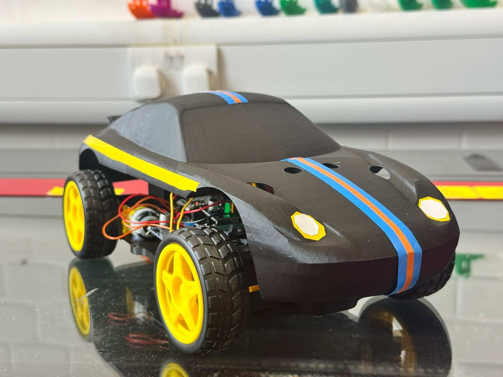
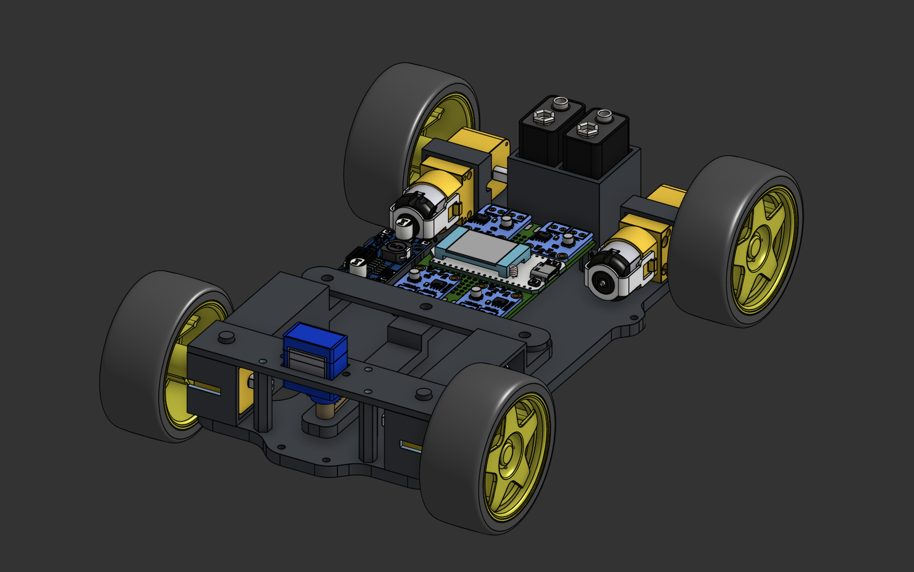
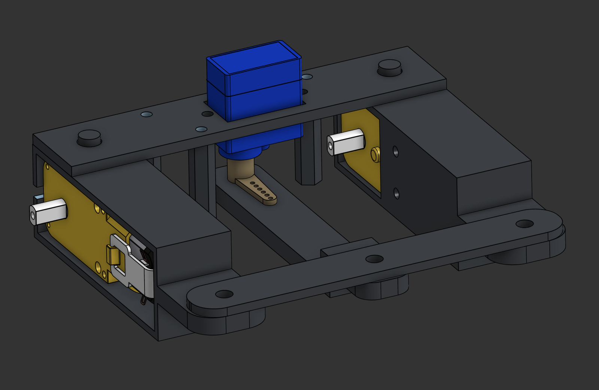
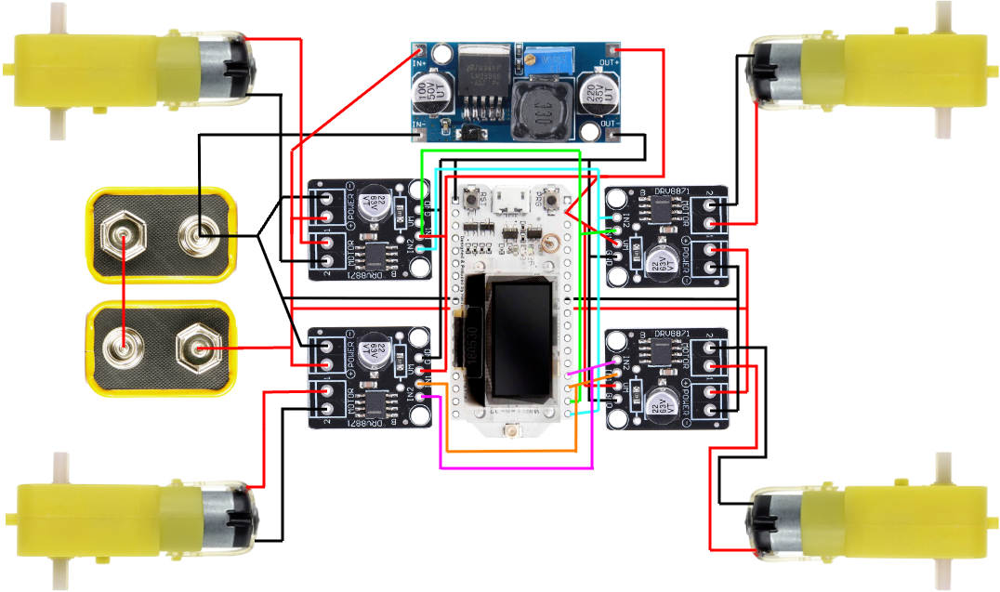
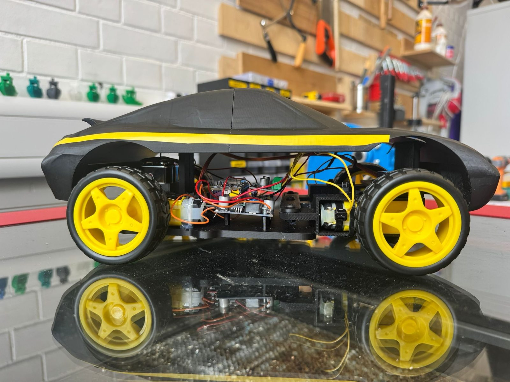

The DE1 Electronics Grand Prix: build a phone-controlled electric car and race it against the entire year group on a zig-zag classroom circuit. Ours ran MicroPython on a Heltec ESP32, drove its 12 V motors over-volted to ~18 V, and steered through a custom servo-driven four-bar mechanism instead of relying on differential drive alone.
A 31.26 s qualifying lap put us in the head-to-head final — finishing 2nd of 23 cars, with a Grade A for the project.

The circuit zig-zagged around a classroom with three straightaways. Qualifying was by lap time; the three fastest cars then raced head-to-head. That format rewarded two things — top speed on the straights, and controlled, repeatable cornering through the zig-zags.
We attacked both. For the straights, the motors were rated 12 V but we ran them from two 9 V batteries in series at ~16–18 V — sourcing our own DRV8871 H-bridges with the headroom to take it, rather than the standard drivers. For the corners, we built genuine mechanical steering so cornering didn't depend on wheel-speed guesswork.
I designed the car's base and chassis layout in CAD — packaging the motors, batteries, wiring and bodywork within the size constraints — and we built the electronics together through soldering, wiring and the power/control architecture.

The chassis was CAD-modelled with the electronics in the assembly, not added afterwards — motor positions, battery placement, perfboard footprint and wiring space were all packaged together, which kept the weight balanced and the build free of surprises.
Five custom parts were printed: the main chassis, front motor mounts, steering axle, cross beam and anchored top panel.
The steering is a parallel four-bar: the front motors mount on pivoting axles, linked by a parallel bar, and the SG90 rotates a second bar that swings the whole linkage — so both front wheels steer together at the same angle.
The firmware completes the mechanism. When the servo steers, the outer wheel is driven faster than the inner (850 vs 700 of 1023 PWM duty) to match the turning radius — the drivetrain pulls the car around the corner instead of fighting the geometry.



Qualifying: 31.26 s — second-fastest lap of all 23 cars, and a place in the three-car head-to-head final.
The final came down to the last metre. Leading into the closing stretch, we clipped a chair one metre before the line and finished second. The whole thing — pace, contact, and all — is preserved in the race footage.
Design for the environment, not just the course. The car was optimised entirely for speed on the racing line, with nothing to manage contact when the line failed — and a chair ended our race a metre from the win. Angled deflection surfaces on the front corners would have cost almost nothing in weight and turned a race-ending snag into a glancing bounce.
Calculated over-stress works when the whole chain is rated for it. Over-volting the motors gave us real straight-line pace, but only because every downstream component — H-bridges, wiring, power regulation — was chosen to handle it. The speed came from the spreadsheet, not from luck.
The full CAD (assembly + custom parts), MicroPython firmware, wiring diagram, pinout table and race footage are open on GitHub.
View the repository ↗